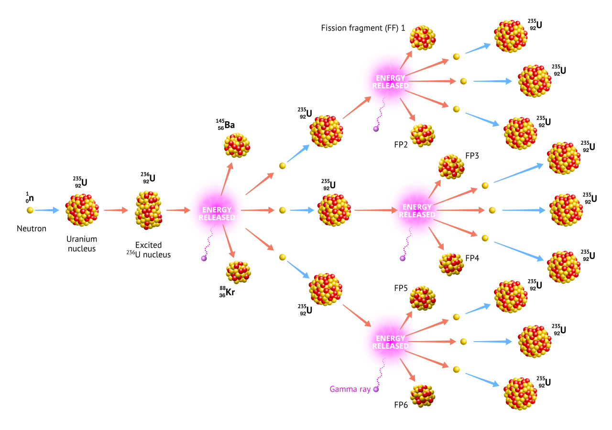

EES 4760/5760
Agent-Based and Individual-Based Computational Modeling
J. Magnolia Gilligan
Class #17: Tuesday, October 27, 2026
On “downloads” page, open “17. Models for Scheduling”
tick)tick-advance x)repeat repeats a certain number of times
repeat 5 [ wander ]or
repeat (random 10) [ wander ]while repeats as long as a condition is true
while not any? other turtles-here [ wander ]loop repeats forever (until stop or
report)
loop [
wander
if any? other turtles-here [ stop ]
]to go, everything happens at
the same time on the clock.to go.tick advances tick counter by 1.ticks is always an integer.tick-advance 2.3ticks can have fractional valuesto go
ask patches [ do-patch-stuff ]
ask turtles [ do-turtle-stuff ]
tick
if ticks > run-duration [stop]
endto go
tick
if ticks > run-duration [stop]
ask patches [ do-patch-stuff ]
ask turtles [ do-turtle-stuff ]
endgo,
stop, that iteration of go
will not write the values from that step to the file.ask: Asks turtles in a random order.
ask turtles [do-sales]Suppose we wanted bigger turtles to act before the smaller ones?
foreach (sort-on [size] turtles) [ x -> ask x [do-sales] ]foreach asks each member of a list in order, from
first to last.x -> means that:
x
x to
that turtle, and executes whatever’s to the right of
->
ask patches [ set patch-value 0 ]
ask turtles [turtle-action]
to turtle-action
ask one-of patches with [pcolor = blue]
[
set patch-value patch-value + 1
set pcolor red
]
endturtle 7 checks
[pcolor] of patch 20 20: it’s blueturtle 7 increments patch-value
turtle 7 sets pcolor to redturtle 3 checks
[pcolor] of patch 20 20: it’s redturtle 3 checks another patch[patch-value] of patch 20 20 is 1
[pcolor] of patch 20 20 is red
ask patches [ set patch-value 0 ]
ask turtles [ turtle-action-1 ]
ask turtles [ turtle-action-2 ]
to turtle-action-1
ask one-of patches with [pcolor = blue]
[
set patch-value patch-value + 1
]
end
to turtle-action-2
ask one-of patches with [pcolor = blue]
[
set pcolor red
]
end
turtle 4 checks
[pcolor] of patch 20 20: it’s blueturtle 4 increments patch-value of
patch 20 20
turtle 13 checks
[pcolor] of patch 20 20: it’s blueturtle 13 increments patch-value of
patch 20 20
turtle 6 checks
[pcolor] of patch 8 32: it’s blueturtle 6 sets pcolor to
red
turtle 9 checks
[pcolor] of patch 17 3: it’s blueturtle 9 sets pcolor to
red
[patch-value] of patch 20 20 is 2
[pcolor] of patch 20 20 is blue
Break submodel into two parts:
Make shadow copy of all state variables in the environment:
patches-own [ old-sugar new-sugar ]old-sugar, updates change shadow-copies
(new-sugar)ask patches [set old-sugar new-sugar])ask-concurrent primitive.

On “downloads” page, open “17. Models for Scheduling”